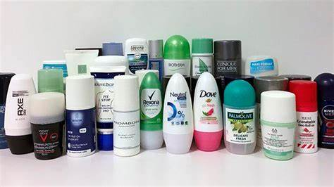

Insumos de Higiene
Jabón de Manos
- Producto utilizado para limpiar las manos eliminando suciedad, grasa y gérmenes. Los jabones pueden ser líquidos o en barra y están formulados para ofrecer propiedades antibacterianas, hidratantes o exfoliantes.
Toallitas Húmedas
- Paños impregnados con una solución líquida que permite limpiar y desinfectar rápidamente las manos, superficies o el rostro. Son muy prácticas para el uso fuera de casa, como en viajes o durante actividades al aire libre.
Papel Higiénico
- Producto utilizado principalmente para la higiene personal después de utilizar el baño. El papel higiénico está diseñado para ser suave y resistente, permitiendo una limpieza efectiva.
- Papel higiénico en rollo: El más común, utilizado en hogares y oficinas.
- Papel higiénico reciclado: Una opción ecológica hecha de materiales reciclados.
Papel Toalla
- Papel absorbente utilizado para secar las manos o limpiar superficies en cocinas, baños, oficinas, etc. Se encuentra en rollos o en paquetes de servilletas.
- Papel toalla en rollo: Se utiliza en dispensadores para secar manos en lugares públicos o en el hogar.
- Servilletas de papel: Usadas para secar o limpiar en mesas, comedores o cocinas.
Gel Antibacterial
- Producto de higiene personal que contiene alcohol y otros componentes antibacterianos. Se utiliza principalmente para limpiar y desinfectar las manos sin necesidad de agua, matando gérmenes y bacterias en la piel.
- Gel antibacterial en botella: Usado para desinfectar las manos en lugares donde no hay acceso a agua y jabón.
- Gel con hidratación: Fórmulas que incluyen ingredientes hidratantes para evitar que las manos se resequen.
Desodorantes y Antitranspirantes
- Productos que se aplican en el cuerpo para reducir el mal olor corporal causado por el sudor o bloquear la transpiración. Los desodorantes se enfocan en neutralizar el olor, mientras que los antitranspirantes controlan la producción de sudor.

Pasta y Cepillo de Dientes
- Insumos básicos de higiene oral para la prevención de enfermedades bucales. El cepillo de dientes se utiliza para eliminar la placa bacteriana y la pasta dental contiene ingredientes que ayudan a combatir la caries y el mal aliento.
Enjuague Bucal
- Líquido utilizado para enjuagar la boca y ayudar en la higiene oral. Además de combatir el mal aliento, el enjuague bucal ayuda a eliminar bacterias que pueden causar caries y enfermedades en las encías.
Alcohol Isopropílico
- Solución alcohólica utilizada para desinfectar superficies, equipos y para la higiene de manos. También es usado para limpiar heridas menores.

Guantes de Látex o Nitrilo
- Guantes desechables utilizados para proteger las manos de contaminantes y evitar el contacto directo con sustancias o patógenos. Son fundamentales en farmacias para mantener un entorno limpio y seguro.
Mascarillas Faciales
- Dispositivo de protección utilizado para cubrir la boca y la nariz, protegiendo tanto al portador como a las personas de la transmisión de partículas infecciosas. Son esenciales en farmacias para mantener un ambiente libre de gérmenes.
Cotonetes o Bastoncillos de Algodón
- Dispositivos de higiene personal usados para limpiar áreas pequeñas del cuerpo, como los oídos o la nariz, y también para la aplicación de productos cosméticos.